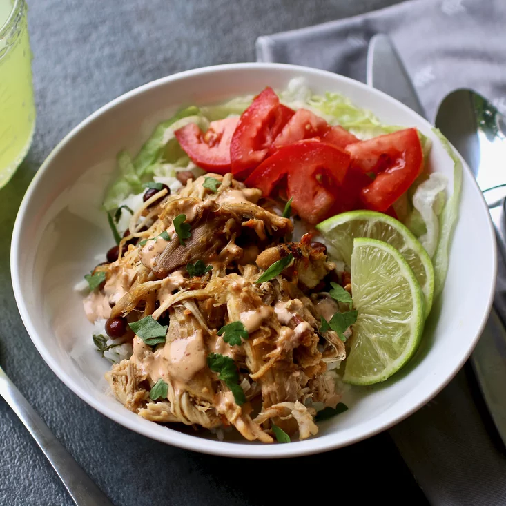

Quick and easy, pressure-cooked chicken carnitas! Serve
with tortillas, diced onions, chopped cilantro, sauteed
cabbage, lime wedges, and anything else you like!
- 1 tbsp. ground cumin
- 1/2 tsp. chili powder
- 1/2 tsp. dried oregano
- 1 pinch salt and ground black pepper, to taste
- 3 tbsp. olive oil
- 2 lbs. skinless, bonless chicken breast halves
- 5 cloves garlic, pressed
- 1 yellow onion, quartered
- 1/4 cup lime juice
- 1/4 cup chicken broth
- 1/2 bunch cilantro
- 1 chipotle pepper in adobo sauce
- 1 orange, juiced
- 1 bay leaf
- 1/2 cup mayo
- 1 tbsp. milk
- 1 chipotle pepper in adobo sauce
- 1 pinch salt
- 1 pinch garlic powder
- Combine cumin, chili powder, oregano, salt, and
pepper in a bowl. Sprinkle over chicken breasts
on both sides.
- Turn on a multi-functional pressure cooker (such
as Instant Pot®) and select Saute function.
Add 1 tablespoon olive oil and sear chicken breasts,
1 to 2 minutes per side, working in batches so
chicken sears rather than steams. Transfer chicken
to a plate.
- Add garlic and onion to the hot cooker; cook and stir
until browned evenly on all sides, about 2 minutes.
Return chicken to the pressure cooker along with lime
juice, chicken broth, cilantro, chipotle pepper with 1
tablespoon adobo sauce, orange zest and juice, and bay leaf.
Close and lock the lid. Set timer for 8 to 10 minutes,
depending on size of chicken breasts.
- Meanwhile, combine mayonnaise, milk, chipotle pepper
and 1 tablespoon adobo sauce, salt, and garlic powder
to an electric blender. Blend chipotle sauce until smooth.
- Release pressure from the cooker using the
natural-release method according to manufacturer's
instructions, 10 to 40 minutes. Unlock and remove
the lid.
- Set an oven rack about 6 inches from the heat source
and preheat the oven's broiler.
- Transfer chicken breasts to a clean surface and
reserve cooking liquid. Shred chicken meat using
2 forks. Place in a large bowl and drizzle 1/4 cup
cooking liquid over chicken; toss to coat. Drizzle 1
tablespoon oil over the surface of a baking sheet.
Add chicken to the sheet and drizzle remaining 1
tablespoon oil on top. Stir to coat evenly.
- Transfer chicken breasts to a clean surface and
reserve cooking liquid. Shred chicken meat using
2 forks. Place in a large bowl and drizzle 1/4 cup
cooking liquid over chicken; toss to coat. Drizzle
1 tablespoon oil over the surface of a baking sheet.
Add chicken to the sheet and drizzle remaining 1
tablespoon oil on top. Stir to coat evenly.